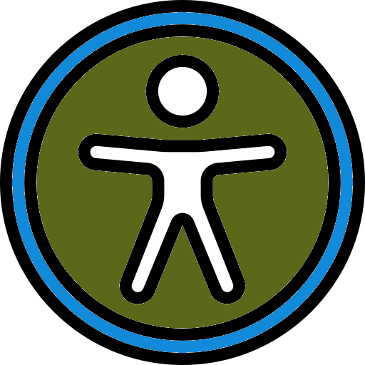

VANTAGENS
VISÃO DETALHADA
Nossa plataforma proporciona uma vista detalhada e personalizada de todas as informações necessárias para uma melhor administração.

MELHORIA DO AMBIENTE ESCOLAR
Com o auxílio da nossa plataforma, as instituições poderão tomar medidas para melhorar o ensino e aprendizagem dos alunos.

MAIOR ACESSIBILIDADE
Os alunos com sensibilidades auditivas poderão ter um melhor aprendizado em sala de aula.
MAIOR CONTROLE
Os gestores terão um controle total das salas desejadas, podendo saber, por exemplo, qual a média de ruídos emitidos em determinada aula.